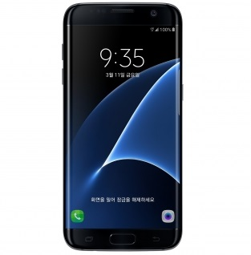
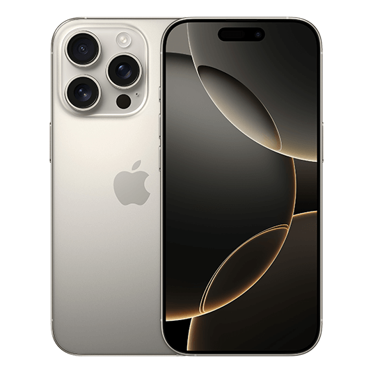
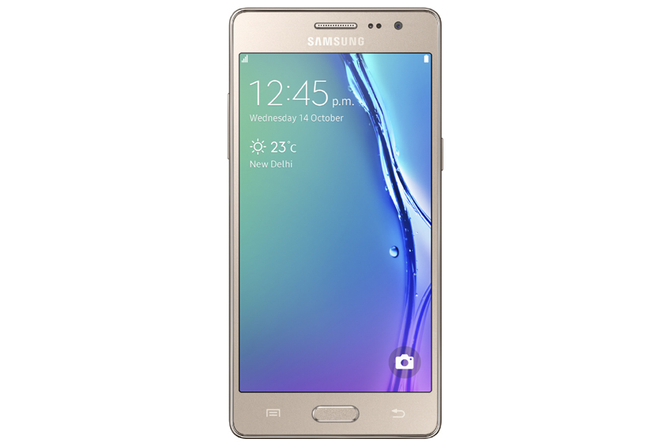
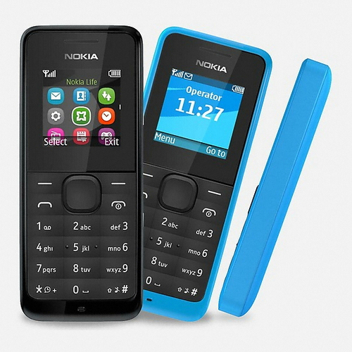

스마트폰은 컴퓨터를 결합한 무선 휴대전화기이다. PC에서 실행되는 운영체제보다 작게 만든 모바일 운영체제를 탑재하여 인터넷 검색, 전자우편, 간단한 문서 편집, 카메라, 오디오 및 비디오 생성 등 PC의 기능을 거의 모두 갖추고 있다.
최초의 스마트폰은 사이먼(Symon)으로 추정된다. IBM사가 1992년에 설계하여 그 해에 미국 네바다 주의 라스베이거스에서 열린 컴댁스에서 컨셉 상품으로 전시되었다.
안드로이드(영어: Android)는 구글이 개발한 모바일 운영체제이다. 안드로이드는 리눅스 기반의 오픈 소스 운영체제로, 다양한 제조사에서 사용하고 있으며, 스마트폰, 태블릿, 웨어러블 기기 등에 적용되고 있다.
아이폰(영어: iPhone)은 애플이 개발한 스마트폰으로, 2007년 1월 9일에 처음 발표되었다. 아이폰은 터치스크린 인터페이스와 모바일 운영체제인 iOS를 탑재하여, 인터넷 검색, 전자우편, 음악 및 비디오 재생, 카메라 기능 등을 제공한다.
 |
 |
 |
 |